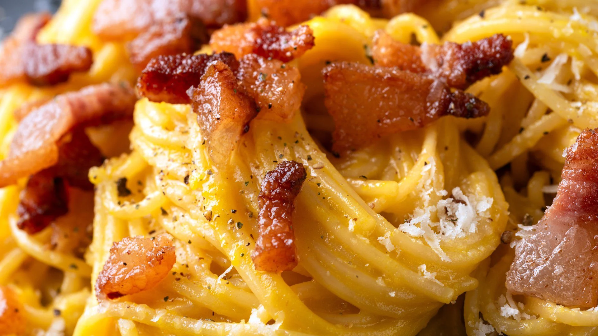

Carbonara

Description:
Carbonara: a must-try Italian dish originating from Rome, the capital city.
A delicious spaghetti dish made with crispy bacon and a creamy egg sauce.
Ingredients for 4 person
- Spaghetti - 300g
- Guanciale - 100g
- Pecorino - 30g
- Eggs - 4
- Salt - to taste
- Pepper - to taste
Steps
- Boil water to cook pasta
- Cut the guanciale in small pieces and put them in a pan on the stove (no need to add oil, it will fry in its own fat)
- Break the eggs and separate the eggs yolks from the whites (you won't need this lasts, you can use them to have an healthy breakfast tomorrow). Put the yolks in a bowl with pecorino, salt and pepper, and mix
- When the pasta is almost ready, take it off the heat, drain it and add it in the pan with the guanciale (before this you can save a few crispy guanciale's bites for later, you can use them to decorate the final dish! Maybe not in front of an Italian)
Home